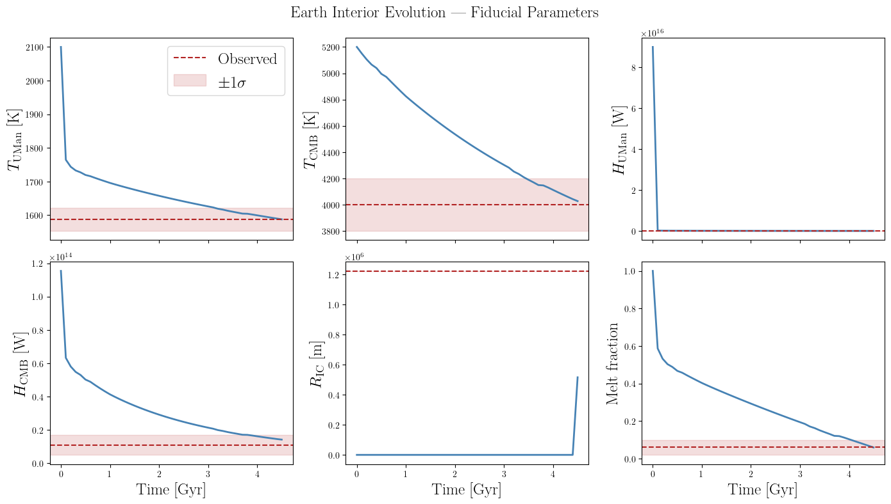
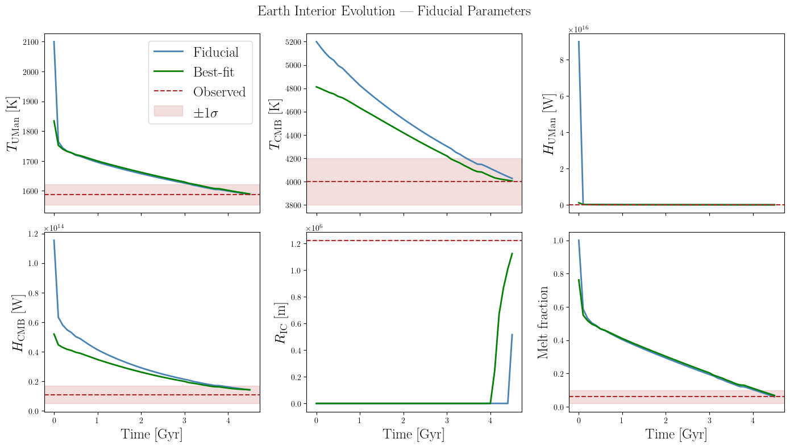
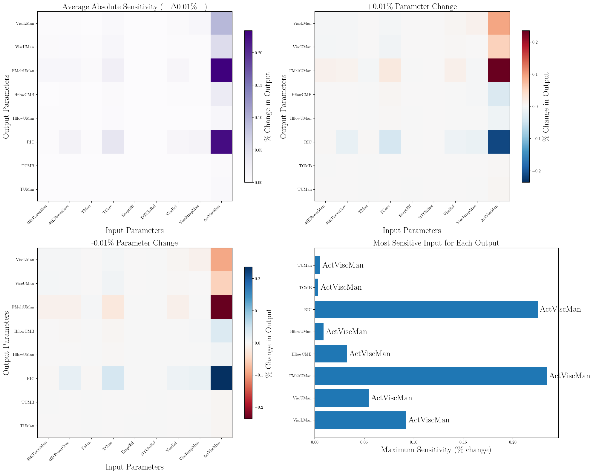
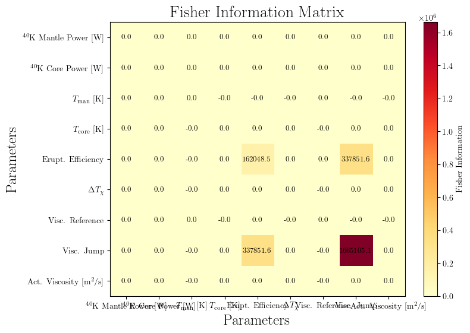

Maximum Likelihood Estimation for Earth Interior Evolution
This tutorial demonstrates how to use maximum likelihood estimation (MLE) with vplanet_inference to find initial conditions for Earth’s thermal interior evolution that are consistent with present-day geophysical observations used in Gilbert-Janizek et al. (2026): A whole-planet model of the Earth without life for terrestrial exoplanet studies
We use VPLanet’s thermint (thermal interior) and radheat (radiogenic heating) modules to model:
Mantle and core temperature evolution over 4.5 Gyr
Heat flow from the core-mantle boundary (CMB) and upper mantle surface
Growth of the inner core radius
Mantle viscosity from a self-consistent parameterized convection scheme
We then apply MLE to find the combination of planetary parameters that best reproduce the modern Earth. See Gilbert-Janizek et al. (2026) for more details.
What we cover:
Earth model setup — VPLanet infiles for
thermint+radheat, and theVplanetModelinterfaceObservational constraints — present-day geophysical measurements and the Gaussian log-likelihood
Fiducial model — verifying the setup by running at known-good parameters
Single optimization —
scipy.optimize.minimizewith the Nelder-Mead algorithmMulti-start MLE — parallel optimization from random starting points to handle non-convexity
Results analysis — comparing best-fit outputs to observations
Dependencies: vplanet_inference, scipy, numpy, matplotlib, astropy, pandas, tqdm
VPLanet modules used: thermint, radheat, stellar (for the host Sun)
References:
Driscoll & Barnes (2015) —
thermintmodule
[1]:
import os
import numpy as np
import pandas as pd
import scipy.optimize
import multiprocessing as mp
import matplotlib.pyplot as plt
import astropy.units as u
import astropy.constants as const
from functools import partial
from tqdm import tqdm
import warnings
import vplanet_inference as vpi
warnings.filterwarnings('ignore')
1. Earth Model Setup
1.1 VPLanet Input Files
The Earth interior model requires three input files:
File |
Purpose |
|---|---|
|
System control file — units, timing, list of bodies |
|
Host star — fixed luminosity and mass (no stellar evolution) |
|
Earth body — |
The radheat module tracks the decay of long-lived radiogenic isotopes (\({}^{40}\text{K}\), \({}^{232}\text{Th}\), \({}^{235}\text{U}\), \({}^{238}\text{U}\)) and computes their contribution to mantle and core heating over geological time.
The thermint module uses a parameterized convection model to evolve the mantle and core temperatures, computing heat flows, viscosity, inner core growth, and magnetic moment self-consistently from the thermal state.
We create the infiles in a local earth_infiles/ directory so this notebook is self-contained.
[2]:
INFILE_PATH = "earth_infiles/"
os.makedirs(INFILE_PATH, exist_ok=True)
# SI conversion constants
STOP_TIME_SEC = (4.5e9 * u.yr).si.value # 4.5 Gyr in seconds
OUT_TIME_SEC = (1e8 * u.yr).si.value # 100 Myr in seconds
M_SUN_KG = const.M_sun.si.value # solar mass in kg
R_SUN_0135_M = (0.00135 * u.AU).si.value # 0.00135 AU in metres
OBL_RAD = float((23.5 * u.deg).to(u.rad).value) # obliquity in radians
# ---- vpl.in ----
# Units will be converted to SI by vplanet_inference (sUnitMass->kg, sUnitLength->m,
# sUnitTime->sec, sUnitAngle->rad). dStopTime and dOutputTime are therefore written
# in seconds so VPLanet interprets them correctly after the unit substitution.
vpl_in = f"""\
# Primary input file: Earth interior evolution
sSystemName earth
iVerbose 0
bOverwrite 1
saBodyFiles sun.in earth.in
sUnitMass solar
sUnitLength aU
sUnitTime YEARS
sUnitAngle d
sUnitTemp K
bDoLog 1
iDigits 6
dMinValue 1e-10
bDoForward 1
bVarDt 1
dEta 0.1
dStopTime {STOP_TIME_SEC:.6e}
dOutputTime {OUT_TIME_SEC:.6e}
"""
# ---- sun.in ----
# All values in SI because vplanet_inference sets sUnitMass=kg, sUnitLength=m.
sun_in = f"""\
# Host star: present-day Sun (fixed, no evolution)
sName sun
saModules stellar
dMass {M_SUN_KG:.6e}
dRadius {R_SUN_0135_M:.6e}
dLuminosity 3.846e26
dSemi 0
dEcc 0
sStellarModel none
"""
# ---- earth.in ----
# dObliquity in radians (vplanet_inference sets sUnitAngle=rad).
# Negative values (-1) tell VPLanet to use its built-in Earth defaults.
earth_in = f"""\
# Earth body: radiogenic heating + thermal interior
sName earth
saModules radheat thermint
# Physical properties (negative -> VPLanet Earth defaults, unit-independent)
dMass -1.0
dRadius -1.0
dRotPeriod -1.0
dObliquity {OBL_RAD:.6f}
dRadGyra 0.5
dEcc 0.0167
dSemi -1
# Radiogenic heating — 40K (substituted by vplanet_inference)
d40KPowerMan -1
d40KPowerCore -1
d40KPowerCrust -1
# Radiogenic heating — other isotopes (default Earth values)
d232ThPowerMan -1
d232ThPowerCore -1
d232ThPowerCrust -1
d235UPowerMan -1
d235UPowerCore -1
d235UPowerCrust -1
d238UPowerMan -1
d238UPowerCore -1
d238UPowerCrust -1
# Thermint initial conditions and rheological parameters
dTMan 3000
dTCore 6500
dViscJumpMan 2.4
dActViscMan 3e5
dViscRef 6e7
dEruptEff 0.10
dDTChiRef 0
# Output time series for visualization (overridden by vplanet_inference)
saOutputOrder -Time -TMan -TUMan -TCMB -TCore -HflowUMan -HflowCMB -RIC -ViscUMan -ViscLMan -FMeltUMan
"""
with open(os.path.join(INFILE_PATH, "vpl.in"), "w") as f: f.write(vpl_in)
with open(os.path.join(INFILE_PATH, "sun.in"), "w") as f: f.write(sun_in)
with open(os.path.join(INFILE_PATH, "earth.in"), "w") as f: f.write(earth_in)
print("Infiles written to:", INFILE_PATH)
print(f" dStopTime = {STOP_TIME_SEC:.3e} sec")
print(f" dOutputTime= {OUT_TIME_SEC:.3e} sec")
print(f" sun dMass = {M_SUN_KG:.3e} kg")
print(f" sun dRadius= {R_SUN_0135_M:.3e} m")
print(f" dObliquity = {OBL_RAD:.6f} rad")
Infiles written to: earth_infiles/
dStopTime = 1.420e+17 sec
dOutputTime= 3.156e+15 sec
sun dMass = 1.988e+30 kg
sun dRadius= 2.020e+08 m
dObliquity = 0.410152 rad
Key infile options for Earth interior modelling:
Option |
Value |
Description |
|---|---|---|
|
|
Simulate 4.5 Gyr — the age of the solar system |
|
|
Placeholder: |
|
|
Initial mantle temperature [K] — substituted by vplanet_inference |
|
|
Mantle viscosity jump across the transition zone |
|
|
Mantle activation viscosity [m²/s] |
|
|
Melt eruption efficiency (fraction of melt that erupts) |
|
|
Variables written to the time-series |
1.2 Input Parameters
We optimize 9 parameters that control the initial radiogenic heat budget, starting temperatures, and rheological properties of Earth’s interior.
Parameter |
Symbol |
Units |
Physical Meaning |
|---|---|---|---|
|
\({}^{40}\text{K}\) mantle power |
W |
Initial \({}^{40}\text{K}\) heating in mantle |
|
\({}^{40}\text{K}\) core power |
W |
Initial \({}^{40}\text{K}\) heating in core |
|
\(T_{\rm man}\) |
K |
Initial mantle temperature |
|
\(T_{\rm core}\) |
K |
Initial core temperature |
|
\(\epsilon_{\rm erupt}\) |
— |
Melt eruption efficiency |
|
\(\Delta T_{\chi}\) |
— |
CMB temperature offset parameter |
|
\(\eta_{\rm ref}\) |
— |
Mantle reference viscosity |
|
\(\Delta\eta\) |
— |
Mantle viscosity jump |
|
\(\eta_{\rm act}\) |
m²/s |
Mantle activation viscosity |
Note: In this example, other radiogenic isotopes (\({}^{232}\text{Th}\), \({}^{238}\text{U}\), \({}^{235}\text{U}\)) are held at their primordial Earth values (-1 in the infile). Only the \({}^{40}\text{K}\) budget is varied, since \({}^{40}\text{K}\) has the largest uncertainty among the major radiogenic heat producers.
[3]:
# =====================================================
# Input parameters: names and astropy units
# =====================================================
inparams = {
"earth.d40KPowerMan": u.W,
"earth.d40KPowerCore": u.W,
"earth.dTMan": u.K,
"earth.dTCore": u.K,
"earth.dEruptEff": u.dimensionless_unscaled,
"earth.dDTChiRef": u.K,
"earth.dViscRef": u.m**2 / u.s,
"earth.dViscJumpMan": u.dimensionless_unscaled,
"earth.dActViscMan": u.m**2 / u.s,
}
# Human-readable labels for plots
inlabels = [
r"${}^{40}\mathrm{K}$ Mantle Power [W]",
r"${}^{40}\mathrm{K}$ Core Power [W]",
r"$T_{\rm man}$ [K]",
r"$T_{\rm core}$ [K]",
r"Erupt. Efficiency",
r"$\Delta T_{\chi}$",
r"Visc. Reference",
r"Visc. Jump",
r"Act. Viscosity [m$^2$/s]",
]
# Reference values for K-40 radiogenic power
K40_man_ref = 3.615780e13 # W
K40_core_ref = 3.385730e13 # W
# Prior bounds — uniform sampling between these limits
bounds = [
[0.8 * K40_man_ref, 1.5 * K40_man_ref], # d40KPowerMan
[0.8 * K40_core_ref, 1.5 * K40_core_ref], # d40KPowerCore
[2500, 3000], # dTMan [K]
[5800, 6800], # dTCore [K]
[0.05, 0.15], # dEruptEff
[0.0, 0.001], # dDTChiRef
[4e7, 9e8], # dViscRef
[1.1, 2.4], # dViscJumpMan
[2.5e5, 3.1e5], # dActViscMan [m^2/s]
]
bounds = np.array(bounds)
# Fiducial (reference) parameter values
theta_fiducial = np.array([
K40_man_ref, # d40KPowerMan
K40_core_ref, # d40KPowerCore
3000, # dTMan [K]
6500, # dTCore [K]
0.10, # dEruptEff
0.0, # dDTChiRef
6e7, # dViscRef
2.4, # dViscJumpMan
3e5, # dActViscMan [m^2/s]
])
print(f"Number of free parameters: {len(inparams)}")
vpi.check_units(inparams)
Number of free parameters: 9
Parameter User unit VPLanet unit Status
-----------------------------------------------------------------------------------
earth.d40KPowerMan W W OK
earth.d40KPowerCore W W OK
earth.dTMan K K OK
earth.dTCore K K OK
earth.dEruptEff OK
earth.dDTChiRef K K OK
earth.dViscRef m2 / s m2 / s OK
earth.dViscJumpMan OK
earth.dActViscMan m2 / s m2 / s OK
[3]:
{'consistent': [('earth.d40KPowerMan', Unit("W"), Unit("W")),
('earth.d40KPowerCore', Unit("W"), Unit("W")),
('earth.dTMan', Unit("K"), Unit("K")),
('earth.dTCore', Unit("K"), Unit("K")),
('earth.dEruptEff', Unit(dimensionless), Unit(dimensionless)),
('earth.dDTChiRef', Unit("K"), Unit("K")),
('earth.dViscRef', Unit("m2 / s"), Unit("m2 / s")),
('earth.dViscJumpMan', Unit(dimensionless), Unit(dimensionless)),
('earth.dActViscMan', Unit("m2 / s"), Unit("m2 / s"))],
'inconsistent': [],
'unknown': []}
1.3 Output Parameters and Observational Constraints
We constrain the model using 8 present-day geophysical observables:
Output |
Observable |
Value |
Uncertainty |
|---|---|---|---|
|
Upper mantle melt fraction |
0.06 |
0.04 |
|
Core-mantle boundary heat flow |
11 TW |
6 TW |
|
Upper mantle surface heat flow |
38 TW |
3 TW |
|
Inner core radius |
1224.1 km |
1 km |
|
CMB temperature |
4000 K |
200 K |
|
Upper mantle potential temperature |
1587 K |
34 K |
|
Lower mantle viscosity |
\(1.5 \times 10^{18}\) m²/s |
\(1.4 \times 10^{18}\) m²/s |
|
Upper mantle viscosity |
\(2.3 \times 10^{18}\) m²/s |
\(2.3 \times 10^{18}\) m²/s |
Note: Some variables like viscosity observables have relatively high uncertainties comparable to their central values. The inner core radius, by contrast, is very well constrained by seismology and will strongly influence the likelihood function.
[4]:
# Unit conversion: TW -> W (SI)
TW_TO_W = (u.TW).to(u.W)
# Output parameters: names and astropy units for VPI to convert to.
outparams = {
"final.earth.ViscLMan": u.m**2 / u.s,
"final.earth.ViscUMan": u.m**2 / u.s,
"final.earth.FMeltUMan": u.dimensionless_unscaled,
"final.earth.HflowCMB": u.W,
"final.earth.HflowUMan": u.W,
"final.earth.RIC": u.m,
"final.earth.TCMB": u.K,
"final.earth.TUMan": u.K,
}
outlabels = [k.replace("final.earth.", "") for k in outparams.keys()]
vpi.check_units(outparams)
Parameter User unit VPLanet unit Status
-------------------------------------------------------------------------------------
final.earth.ViscLMan m2 / s m2 / s OK
final.earth.ViscUMan m2 / s m2 / s OK
final.earth.FMeltUMan OK
final.earth.HflowCMB W TW OK
final.earth.HflowUMan W TW OK
final.earth.RIC m km OK
final.earth.TCMB K K OK
final.earth.TUMan K K OK
[4]:
{'consistent': [('final.earth.ViscLMan', Unit("m2 / s"), Unit("m2 / s")),
('final.earth.ViscUMan', Unit("m2 / s"), Unit("m2 / s")),
('final.earth.FMeltUMan', Unit(dimensionless), Unit(dimensionless)),
('final.earth.HflowCMB', Unit("W"), Unit("TW")),
('final.earth.HflowUMan', Unit("W"), Unit("TW")),
('final.earth.RIC', Unit("m"), Unit("km")),
('final.earth.TCMB', Unit("K"), Unit("K")),
('final.earth.TUMan', Unit("K"), Unit("K"))],
'inconsistent': [],
'unknown': []}
[5]:
# Observational data: (mean, 1-sigma) in SI units matching VPLanet output
outparams_data = {
"final.earth.FMeltUMan": [0.06, 0.04],
"final.earth.HflowCMB": [11.0 * TW_TO_W, 6.0 * TW_TO_W], # W
"final.earth.HflowUMan": [38.0 * TW_TO_W, 3.0 * TW_TO_W], # W
"final.earth.RIC": [1224.1e3, 1e3], # m
"final.earth.TCMB": [4000, 200], # K
"final.earth.TUMan": [1587, 34], # K
"final.earth.ViscLMan": [1.5e18, 1.4e18], # m^2/s
"final.earth.ViscUMan": [2.275e18, 2.27e18], # m^2/s
}
# like_data: shape (n_obs, 2) — rows in same order as outparams
like_data = np.array([outparams_data[key] for key in outparams.keys()])
print("like_data shape:", like_data.shape)
print("\nObservable | Mean | Std")
print("-" * 50)
for label, (mean, std) in zip(outlabels, like_data):
print(f" {label:<12s} {mean:12.4g} {std:12.4g}")
like_data shape: (8, 2)
Observable | Mean | Std
--------------------------------------------------
ViscLMan 1.5e+18 1.4e+18
ViscUMan 2.275e+18 2.27e+18
FMeltUMan 0.06 0.04
HflowCMB 1.1e+13 6e+12
HflowUMan 3.8e+13 3e+12
RIC 1.224e+06 1000
TCMB 4000 200
TUMan 1587 34
1.4 Initializing VplanetModel
We create two VplanetModel instances:
``vpm_final`` — runs a single VPLanet simulation and returns the final-state values from the log file. This is fast and used for MLE optimization.
``vpm_evol`` — runs with
timestepsset, returning time-series data from the.forwardfile at every recorded output interval. Used for visualizing the evolution.
[6]:
# Fast model: final-state values only (used for MLE)
vpm_final = vpi.VplanetModel(
inparams=inparams,
outparams=outparams,
inpath=INFILE_PATH,
outpath="output/earth_mle",
verbose=False,
)
# Evolution model: time series at every 100 Myr (used for visualization)
vpm_evol = vpi.VplanetModel(
inparams=inparams,
outparams=outparams,
inpath=INFILE_PATH,
outpath="output/earth_mle",
timesteps=1e8 * u.yr,
verbose=False,
)
print("Input parameters:")
for p in vpm_final.inparams:
print(f" {p}")
print("\nOutput parameters (sorted alphabetically):")
for p in vpm_final.outparams:
print(f" {p}")
Input parameters:
earth.d40KPowerMan
earth.d40KPowerCore
earth.dTMan
earth.dTCore
earth.dEruptEff
earth.dDTChiRef
earth.dViscRef
earth.dViscJumpMan
earth.dActViscMan
Output parameters (sorted alphabetically):
final.earth.ViscLMan
final.earth.ViscUMan
final.earth.FMeltUMan
final.earth.HflowCMB
final.earth.HflowUMan
final.earth.RIC
final.earth.TCMB
final.earth.TUMan
2. The Log-Likelihood Function
We assume each observable \(y_i\) is measured with Gaussian uncertainty \(\sigma_i\), so the log-likelihood of the data given model parameters \(\boldsymbol{\theta}\) is:
where \(m_i(\boldsymbol{\theta})\) is the VPLanet model prediction for observable \(i\).
This is a standard chi-squared statistic (up to a constant normalization). Maximizing the log-likelihood is equivalent to minimizing the sum of squared residuals weighted by the observational uncertainties.
[7]:
def lnlike(theta, data):
"""
Gaussian log-likelihood for the Earth interior model.
Parameters
----------
theta : array-like, shape (n_params,)
Parameter vector in the order defined by inparams.
data : array-like, shape (n_obs, 2)
Observational data; data[:, 0] = means, data[:, 1] = 1-sigma uncertainties.
Must be in the same units as vpm_final output (sorted outparams order).
Returns
-------
float
Log-likelihood value (always <= 0 for this form).
"""
mdl = vpm_final.run_model(theta, remove=True)
lnl = -0.5 * np.sum(((mdl - data[:, 0]) / data[:, 1])**2)
return lnl
print("Log-likelihood function defined.")
print("Note: expects theta values in units defined by inparams")
Log-likelihood function defined.
Note: expects theta values in units defined by inparams
3. Fiducial Model
Before running the optimization, we verify the setup by evaluating the model at the fiducial (reference) parameters and checking that the outputs are physically reasonable.
The fiducial parameters are based on best-guess Earth values from the literature. They are not the MLE solution — the optimization will improve upon them.
[8]:
# Run the final-state model at fiducial parameters
print("Running fiducial model...")
mdl_fid = vpm_final.run_model(theta_fiducial, remove=True)
lnl_fid = lnlike(theta_fiducial, like_data)
print(f"\nFiducial log-likelihood: {lnl_fid:.2f}")
print("\nFiducial model outputs vs. observations:")
print(f"{'Observable':<14} {'Model':>14} {'Observed':>14} {'(Obs σ)':>12} {'Residual/σ':>12}")
print("-" * 72)
for label, m, (obs, sig) in zip(outlabels, mdl_fid, like_data):
resid = (m - obs) / sig
print(f" {label:<12s} {m:14.4g} {obs:14.4g} {sig:12.4g} {resid:12.2f}")
Running fiducial model...
Fiducial log-likelihood: -100798.23
Fiducial model outputs vs. observations:
Observable Model Observed (Obs σ) Residual/σ
------------------------------------------------------------------------
ViscLMan 1.105e+18 1.5e+18 1.4e+18 -0.28
ViscUMan 4.04e+17 2.275e+18 2.27e+18 -0.82
FMeltUMan 0.05074 0.06 0.04 -0.23
HflowCMB 1.396e+13 1.1e+13 6e+12 0.49
HflowUMan 3.482e+13 3.8e+13 3e+12 -1.06
RIC 7.751e+05 1.224e+06 1000 -448.99
TCMB 4020 4000 200 0.10
TUMan 1585 1587 34 -0.05
3.1 Visualizing the Thermal Evolution at Fiducial Parameters
The vpm_evol instance returns a time series for each output, allowing us to visualize how Earth’s interior has evolved since formation. The horizontal dashed lines mark the present-day observed values.
[9]:
# Run the evolution model to get time series
evol = vpm_evol.run_model(theta_fiducial, remove=True)
time_gyr = evol["Time"].to(u.Gyr).value
fig, axes = plt.subplots(2, 3, figsize=(14, 8), sharex=True)
axes = axes.flatten()
# Data to plot: (key, label, observed mean, observed std, y-scale)
evol_keys = [
("final.earth.TUMan", r"$T_{\rm UMan}$ [K]", 1587, 34, "linear"),
("final.earth.TCMB", r"$T_{\rm CMB}$ [K]", 4000, 200, "linear"),
("final.earth.HflowUMan",r"$H_{\rm UMan}$ [W]", 38.0 * TW_TO_W, 3 * TW_TO_W, "linear"),
("final.earth.HflowCMB", r"$H_{\rm CMB}$ [W]", 11.0 * TW_TO_W, 6 * TW_TO_W, "linear"),
("final.earth.RIC", r"$R_{\rm IC}$ [m]", 1224.1e3, 1e3, "linear"),
("final.earth.FMeltUMan",r"Melt fraction", 0.06, 0.04, "linear"),
]
for ax, (key, ylabel, obs_mean, obs_std, yscale) in zip(axes, evol_keys):
yvals = evol[key]
# Quantities (non-None units) need .value for matplotlib
if hasattr(yvals, 'value'):
yvals = yvals.value
ax.plot(time_gyr, yvals, color="steelblue", lw=2)
ax.axhline(obs_mean, color="firebrick", ls="--", lw=1.5, label="Observed")
ax.axhspan(obs_mean - obs_std, obs_mean + obs_std,
alpha=0.15, color="firebrick", label=r"$\pm1\sigma$")
ax.set_ylabel(ylabel, fontsize=18)
ax.set_yscale(yscale)
for ax in axes[3:]:
ax.set_xlabel("Time [Gyr]", fontsize=18)
axes[0].legend(fontsize=18, loc="upper right")
fig.suptitle("Earth Interior Evolution — Fiducial Parameters", fontsize=18)
plt.tight_layout()
plt.show()
print(f"\nFinal time recorded: {time_gyr[-1]:.2f} Gyr")

Final time recorded: 4.50 Gyr
4. Single Optimization Run
We minimize the negative log-likelihood using scipy.optimize.minimize with the Nelder-Mead algorithm.
Nelder-Mead is a gradient-free simplex method — it does not require derivatives of the objective function, which is important here because VPLanet is a black-box numerical code with no analytical gradients. The adaptive=True option scales the algorithm’s step sizes to the problem dimensionality.
Why Nelder-Mead? The Earth interior likelihood landscape is non-convex and potentially multi-modal (multiple local maxima), so we need a method that can explore broadly without getting stuck near the starting point. The next section addresses this more systematically with multi-start optimization.
Note: If optimizer is failing to converge, try increasing
maxiter
[10]:
neg_lnlike = lambda theta: -lnlike(theta, like_data)
# Start from the fiducial parameters for this single run
print("Running single optimization from fiducial starting point...")
result_single = scipy.optimize.minimize(
neg_lnlike,
x0=theta_fiducial,
bounds=bounds.tolist(),
method="nelder-mead",
options={"maxiter": 200, "adaptive": True},
)
theta_opt_single = result_single.x
lnl_opt_single = -result_single.fun
print(f"\nOptimization status: {'Converged' if result_single.success else 'Not converged'}")
print(f"Function evaluations: {result_single.nfev}")
print(f"\nLog-likelihood improvement: {lnl_fid:.2f} -> {lnl_opt_single:.2f}")
print(f"\nBest-fit parameters (single run):")
for label, val_fid, val_opt in zip(inlabels, theta_fiducial, theta_opt_single):
print(f" {label:35s} fiducial={val_fid:.4g} MLE={val_opt:.4g}")
Running single optimization from fiducial starting point...
Optimization status: Not converged
Function evaluations: 401
Log-likelihood improvement: -100798.23 -> -1.29
Best-fit parameters (single run):
${}^{40}\text{K}$ Mantle Power [W] fiducial=3.616e+13 MLE=3.729e+13
${}^{40}\text{K}$ Core Power [W] fiducial=3.386e+13 MLE=3.366e+13
$T_{\rm man}$ [K] fiducial=3000 MLE=2977
$T_{\rm core}$ [K] fiducial=6500 MLE=6368
Erupt. Efficiency fiducial=0.1 MLE=0.09925
$\Delta T_{\chi}$ fiducial=0 MLE=0.0001465
Visc. Reference fiducial=6e+07 MLE=6.025e+07
Visc. Jump fiducial=2.4 MLE=2.325
Act. Viscosity [m$^2$/s] fiducial=3e+05 MLE=2.978e+05
5. Multi-Start MLE
A single optimization from one starting point may converge to a local maximum of the likelihood rather than the global one. To mitigate this:
We draw
n_startsrandom starting points uniformly from the prior boundsWe run a separate optimization from each starting point in parallel
We select the solution with the highest log-likelihood across all runs
This multi-start strategy increases confidence that we have found the global MLE. The analysis.py script in this directory runs 100 optimizations on 32 cores; here we use fewer starts to keep the notebook runtime manageable.
Practical tip: For production runs, use at least 50–100 starts. Here we use 16 starts as a demonstration; increase
N_STARTSas needed.
[11]:
def uniform_prior_sampler(nsample, bounds):
"""Draw uniform samples within the prior bounds."""
bounds = np.array(bounds)
return np.random.uniform(bounds[:, 0], bounds[:, 1], size=(nsample, bounds.shape[0]))
def opt_parallel(x0):
"""Run a single Nelder-Mead optimization from starting point x0."""
result = scipy.optimize.minimize(
neg_lnlike,
x0=x0,
bounds=bounds.tolist(),
method="nelder-mead",
options={"maxiter": 200, "adaptive": True},
)
return result.x
N_STARTS = 16 # increase to 50–100 for more thorough exploration
N_CORES = min(8, mp.cpu_count())
np.random.seed(42)
starting_points = uniform_prior_sampler(N_STARTS, bounds)
print(f"Multi-start MLE: {N_STARTS} starts on {N_CORES} cores")
print(f"Starting points shape: {starting_points.shape}")
Multi-start MLE: 16 starts on 8 cores
Starting points shape: (16, 9)
[12]:
print(f"Running {N_STARTS} optimizations in parallel...")
with mp.Pool(N_CORES) as pool:
opt_results = list(tqdm(
pool.imap(opt_parallel, starting_points),
total=N_STARTS,
desc="Optimizing",
))
print("\nDone. Evaluating log-likelihood at each solution...")
# Evaluate likelihood at each optimized solution
lnl_values = [lnlike(theta, like_data) for theta in opt_results]
print(f"Log-likelihood range: [{min(lnl_values):.2f}, {max(lnl_values):.2f}]")
print(f"Best log-likelihood: {max(lnl_values):.2f}")
Running 16 optimizations in parallel...
Optimizing: 100%|██████████| 16/16 [11:26<00:00, 42.89s/it]
Done. Evaluating log-likelihood at each solution...
Log-likelihood range: [-2.49, -0.84]
Best log-likelihood: -0.84
[19]:
# Build a DataFrame with all MLE results
param_keys = list(inparams.keys())
rows = []
for ii, (theta_opt, lnl) in enumerate(zip(opt_results, lnl_values)):
row = {"run": ii, "lnlike": lnl}
for key, val in zip(param_keys, theta_opt):
row[key] = val
rows.append(row)
df_mle = pd.DataFrame(rows)
df_mle.to_csv("mle_earth_results.csv", index=False)
print("MLE results saved to mle_earth_results.csv")
df_mle
MLE results saved to mle_earth_results.csv
[19]:
| run | lnlike | earth.d40KPowerMan | earth.d40KPowerCore | earth.dTMan | earth.dTCore | earth.dEruptEff | earth.dDTChiRef | earth.dViscRef | earth.dViscJumpMan | earth.dActViscMan | |
|---|---|---|---|---|---|---|---|---|---|---|---|
| 0 | 0 | -1.563355 | 3.893072e+13 | 4.957678e+13 | 2898.415445 | 6359.310809 | 0.066165 | 0.000158 | 8.978487e+07 | 2.213111 | 285441.080525 |
| 1 | 1 | -1.858103 | 4.565375e+13 | 2.819600e+13 | 2963.016897 | 6632.468070 | 0.071242 | 0.000179 | 2.014352e+08 | 1.534283 | 291384.310267 |
| 2 | 2 | -1.025054 | 3.892838e+13 | 3.408225e+13 | 2750.667482 | 6123.975675 | 0.079518 | 0.000364 | 4.358965e+08 | 2.145643 | 273883.511320 |
| 3 | 3 | -0.926928 | 4.311602e+13 | 4.092170e+13 | 2758.781145 | 6085.287384 | 0.069936 | 0.000068 | 8.833581e+08 | 2.316191 | 259588.954306 |
| 4 | 4 | -1.431515 | 3.485832e+13 | 2.964312e+13 | 2732.755139 | 6381.378285 | 0.061550 | 0.000484 | 7.068233e+07 | 2.327582 | 297874.943285 |
| 5 | 5 | -1.348407 | 4.332892e+13 | 2.973540e+13 | 2926.703362 | 5878.761427 | 0.074504 | 0.000958 | 5.683533e+08 | 2.326135 | 274163.365658 |
| 6 | 6 | -1.251800 | 4.541234e+13 | 4.940365e+13 | 2714.012548 | 5923.434594 | 0.057617 | 0.000339 | 3.741858e+08 | 1.489795 | 275949.097477 |
| 7 | 7 | -1.148466 | 3.747331e+13 | 3.436708e+13 | 2692.752564 | 6045.599365 | 0.132646 | 0.000075 | 8.916665e+08 | 2.136990 | 264246.866368 |
| 8 | 8 | -1.422873 | 3.770678e+13 | 4.109049e+13 | 2899.956842 | 5894.255551 | 0.148081 | 0.000077 | 2.816351e+08 | 1.460465 | 284087.077141 |
| 9 | 9 | -0.841316 | 4.504730e+13 | 3.480988e+13 | 2620.668352 | 6015.273831 | 0.085205 | 0.000753 | 5.838136e+08 | 2.238319 | 269713.243481 |
| 10 | 10 | -1.142041 | 3.077604e+13 | 4.475529e+13 | 2857.197722 | 6442.514549 | 0.127087 | 0.000488 | 4.939935e+08 | 1.688872 | 268659.871213 |
| 11 | 11 | -2.491033 | 3.243361e+13 | 2.800948e+13 | 2878.936605 | 6080.328883 | 0.102207 | 0.000929 | 2.477820e+08 | 1.607480 | 290939.048564 |
| 12 | 12 | -1.850890 | 3.559391e+13 | 2.909320e+13 | 2788.869979 | 5935.182596 | 0.148698 | 0.000841 | 5.829686e+08 | 2.267291 | 273405.008880 |
| 13 | 13 | -1.189563 | 3.287107e+13 | 4.964914e+13 | 2765.977927 | 6617.698031 | 0.140172 | 0.000312 | 1.344867e+08 | 1.425437 | 286769.173588 |
| 14 | 14 | -1.223201 | 4.903179e+13 | 4.613785e+13 | 2571.065819 | 6077.389074 | 0.092369 | 0.000224 | 1.410221e+08 | 1.528535 | 289728.523228 |
| 15 | 15 | -1.034078 | 3.662420e+13 | 3.948137e+13 | 2860.078679 | 6282.429019 | 0.147578 | 0.000959 | 2.577457e+08 | 1.760098 | 280401.338261 |
Reload table of results (if already run):
[8]:
param_keys = list(inparams.keys())
df_mle = pd.read_csv("mle_earth_results.csv")
6. Analyzing the MLE Results
6.1 Best-Fit Parameters
The global MLE solution is the row with the highest log-likelihood value. We compare the best-fit model outputs against the observed Earth values.
[9]:
# Identify the best solution
best_idx = df_mle["lnlike"].idxmax()
theta_best = df_mle.loc[best_idx, param_keys].values.astype(float)
lnl_best = df_mle.loc[best_idx, "lnlike"]
print(f"Best solution: run {best_idx} | ln L = {lnl_best:.2f}\n")
print(f"{'Parameter':<40} {'Fiducial':>14} {'MLE Best':>14} {'Bounds':>20}")
print("-" * 95)
for label, key, fid, mle, (lo, hi) in zip(
inlabels, param_keys, theta_fiducial, theta_best, bounds):
print(f" {label:<38} {fid:14.4g} {mle:14.4g} [{lo:.3g}, {hi:.3g}]")
Best solution: run 9 | ln L = -0.84
Parameter Fiducial MLE Best Bounds
-----------------------------------------------------------------------------------------------
${}^{40}\mathrm{K}$ Mantle Power [W] 3.616e+13 4.505e+13 [2.89e+13, 5.42e+13]
${}^{40}\mathrm{K}$ Core Power [W] 3.386e+13 3.481e+13 [2.71e+13, 5.08e+13]
$T_{\rm man}$ [K] 3000 2621 [2.5e+03, 3e+03]
$T_{\rm core}$ [K] 6500 6015 [5.8e+03, 6.8e+03]
Erupt. Efficiency 0.1 0.0852 [0.05, 0.15]
$\Delta T_{\chi}$ 0 0.0007528 [0, 0.001]
Visc. Reference 6e+07 5.838e+08 [4e+07, 9e+08]
Visc. Jump 2.4 2.238 [1.1, 2.4]
Act. Viscosity [m$^2$/s] 3e+05 2.697e+05 [2.5e+05, 3.1e+05]
6.2 Model Outputs vs. Observations
We run the best-fit model and compare its predictions to the observed Earth values. Residuals are expressed in units of the observational \(1\sigma\) uncertainty.
[13]:
# Run best-fit model
print("Running best-fit model...")
mdl_best = vpm_final.run_model(theta_best, remove=True)
obs_means = like_data[:, 0]
obs_stds = like_data[:, 1]
residuals_fid = (mdl_fid - obs_means) / obs_stds
residuals_best = (mdl_best - obs_means) / obs_stds
print(f"\nFiducial chi^2 = {-2*lnl_fid:.2f}")
print(f"Best-fit chi^2 = {-2*lnl_best:.2f}")
print(f"\n{'Observable':<14} {'Observed':>14} {'Fiducial':>14} {'MLE':>14} {'Res_fid':>9} {'Res_mle':>9}")
print("-" * 82)
for label, obs, fid_m, best_m, r_fid, r_best in zip(
outlabels, obs_means, mdl_fid, mdl_best, residuals_fid, residuals_best):
print(f" {label:<12s} {obs:14.4g} {fid_m:14.4g} {best_m:14.4g} {r_fid:9.2f} {r_best:9.2f}")
Running best-fit model...
Fiducial chi^2 = 201596.46
Best-fit chi^2 = 1.68
Observable Observed Fiducial MLE Res_fid Res_mle
----------------------------------------------------------------------------------
ViscLMan 1.5e+18 1.105e+18 9.831e+17 -0.28 -0.37
ViscUMan 2.275e+18 4.04e+17 3.762e+17 -0.82 -0.84
FMeltUMan 0.06 0.05074 0.05973 -0.23 -0.01
HflowCMB 1.1e+13 1.396e+13 1.409e+13 0.49 0.52
HflowUMan 3.8e+13 3.482e+13 3.573e+13 -1.06 -0.76
RIC 1.224e+06 7.751e+05 1.224e+06 -448.99 0.09
TCMB 4000 4020 4000 0.10 -0.00
TUMan 1587 1585 1587 -0.05 0.00
[14]:
# Run the evolution model to get time series
evol_fiducial = vpm_evol.run_model(theta_fiducial, remove=True)
evol_best = vpm_evol.run_model(theta_best, remove=True)
time_gyr = evol_fiducial["Time"].to(u.Gyr).value
fig, axes = plt.subplots(2, 3, figsize=(14, 8), sharex=True)
axes = axes.flatten()
# Data to plot: (key, label, observed mean, observed std, y-scale)
evol_keys = [
("final.earth.TUMan", r"$T_{\rm UMan}$ [K]", 1587, 34, "linear"),
("final.earth.TCMB", r"$T_{\rm CMB}$ [K]", 4000, 200, "linear"),
("final.earth.HflowUMan",r"$H_{\rm UMan}$ [W]", 38.0 * TW_TO_W, 3 * TW_TO_W, "linear"),
("final.earth.HflowCMB", r"$H_{\rm CMB}$ [W]", 11.0 * TW_TO_W, 6 * TW_TO_W, "linear"),
("final.earth.RIC", r"$R_{\rm IC}$ [m]", 1224.1e3, 1e3, "linear"),
("final.earth.FMeltUMan",r"Melt fraction", 0.06, 0.04, "linear"),
]
for ax, (key, ylabel, obs_mean, obs_std, yscale) in zip(axes, evol_keys):
# plot fiducial evolution
yvals = evol_fiducial[key]
# Quantities (non-None units) need .value for matplotlib
if hasattr(yvals, 'value'):
yvals = yvals.value
ax.plot(time_gyr, yvals, color="steelblue", lw=2, label="Fiducial")
# plot best-fit evolution
yvals = evol_best[key]
if hasattr(yvals, 'value'):
yvals = yvals.value
ax.plot(time_gyr, yvals, color="green", lw=2, label="Best-fit")
ax.axhline(obs_mean, color="firebrick", ls="--", lw=1.5, label="Observed")
ax.axhspan(obs_mean - obs_std, obs_mean + obs_std,
alpha=0.15, color="firebrick", label=r"$\pm1\sigma$")
ax.set_ylabel(ylabel, fontsize=18)
ax.set_yscale(yscale)
for ax in axes[3:]:
ax.set_xlabel("Time [Gyr]", fontsize=18)
axes[0].legend(fontsize=18, loc="upper right")
fig.suptitle("Earth Interior Evolution — Fiducial Parameters", fontsize=18)
plt.tight_layout()
plt.show()
print(f"\nFinal time recorded: {time_gyr[-1]:.2f} Gyr")

Final time recorded: 4.50 Gyr
6.3 Analyze Local Sensitivity Around the MLE Solution
Here we will perform local sensitivity analysis of the model by estimating the the gradient around the MLE solution. Here we will plot how much each output parameter varies (the percent change to the output parameter relative to the MLE value) when a single input parameter is varied by +/- delta_percent. This give us an idea of which input parameters affect the output parameters the most: in this case dActViscMan is the most influential input parameter to all of the input parameters (at
this MLE point).
[10]:
delta_percent = 0.01
# Run the sensitivity analysis
sensitivity_matrix, param_names, output_names = vpi.local_sensitivity_analysis(
vpm_final, theta_best, inparams, outparams, delta_percent=delta_percent
)
# Plot the results
fig = vpi.plot_sensitivity_heatmap(sensitivity_matrix, param_names, output_names,
delta_percent=delta_percent, label_fs=20)
# fig.savefig("local_sensitivity_heatmap.png", dpi=300, bbox_inches='tight')
Computing baseline outputs...
Performing sensitivity analysis for 9 parameters...
Parameter 1/9: earth.d40KPowerMan
Parameter 2/9: earth.d40KPowerCore
Parameter 3/9: earth.dTMan
Parameter 4/9: earth.dTCore
Parameter 5/9: earth.dEruptEff
Parameter 6/9: earth.dDTChiRef
Parameter 7/9: earth.dViscRef
Parameter 8/9: earth.dViscJumpMan
Parameter 9/9: earth.dActViscMan

6.4 Compute Fischer Information Matrix
[14]:
FI = vpi.compute_fisher_information(lnlike, theta_best, like_data, method='hessian')
results = vpi.analyze_fisher_information(FI, param_names=inlabels)
[17]:
results
[17]:
{'standard_errors': {'${}^{40}\\mathrm{K}$ Mantle Power [W]': np.float64(100000.0),
'${}^{40}\\mathrm{K}$ Core Power [W]': np.float64(100000.0),
'$T_{\\rm man}$ [K]': np.float64(91287.09373326863),
'$T_{\\rm core}$ [K]': np.float64(70710.67601670453),
'Erupt. Efficiency': np.float64(0.01243852030909686),
'$\\Delta T_{\\chi}$': np.float64(91287.09346368705),
'Visc. Reference': np.float64(67545.45274672522),
'Visc. Jump': np.float64(0.00189359681397719),
'Act. Viscosity [m$^2$/s]': np.float64(91287.09375973474)},
'correlation_matrix': array([[ 1.00000000e+00, 0.00000000e+00, 0.00000000e+00,
0.00000000e+00, 0.00000000e+00, 0.00000000e+00,
0.00000000e+00, 0.00000000e+00, 0.00000000e+00],
[ 0.00000000e+00, 1.00000000e+00, 0.00000000e+00,
0.00000000e+00, 0.00000000e+00, 0.00000000e+00,
0.00000000e+00, 0.00000000e+00, 0.00000000e+00],
[-0.00000000e+00, -0.00000000e+00, 1.00000000e+00,
4.47213604e-01, 4.34345823e-01, 1.99999979e-01,
1.73192397e-16, -3.76658645e-01, 1.99999979e-01],
[ 0.00000000e+00, 0.00000000e+00, 4.47213600e-01,
1.00000000e+00, 9.64795130e-01, -4.47213608e-01,
1.59113218e-16, -8.42445309e-01, -4.47213608e-01],
[-0.00000000e+00, -0.00000000e+00, 4.34345818e-01,
9.64795130e-01, 1.00000000e+00, -4.25716914e-01,
9.20637064e-15, -9.04921009e-01, -4.34345821e-01],
[ 0.00000000e+00, 0.00000000e+00, 1.99999981e-01,
-4.47213604e-01, -4.25716909e-01, 1.00000000e+00,
1.33795574e-12, 3.76941749e-01, -1.99999982e-01],
[ 0.00000000e+00, 0.00000000e+00, 1.73190594e-16,
1.59118282e-16, 9.20637635e-15, 1.33795574e-12,
1.00000000e+00, 9.27611711e-16, -1.33759358e-12],
[ 0.00000000e+00, 0.00000000e+00, -3.76658641e-01,
-8.42445311e-01, -9.04921011e-01, 3.76941754e-01,
9.27617038e-16, 1.00000000e+00, 3.76658643e-01],
[ 0.00000000e+00, 0.00000000e+00, 1.99999983e-01,
-4.47213609e-01, -4.34345821e-01, -1.99999978e-01,
-1.33759358e-12, 3.76658642e-01, 1.00000000e+00]]),
'condition_number': np.float64(1.7375540344199836e+16),
'determinant': np.float64(6.81655730923163e-51),
'eigenvalues': array([3.90189009e-11, 9.92186470e-11, 1.00000000e-10, 1.00000000e-10,
1.06866498e-10, 2.19183454e-10, 1.99762155e-02, 8.95995419e+04,
1.73755403e+06])}
[16]:
vpi.plot_fisher_heatmap(FI, param_names=inlabels)
[16]:
<Axes: title={'center': 'Fisher Information Matrix'}, xlabel='Parameters', ylabel='Parameters'>
